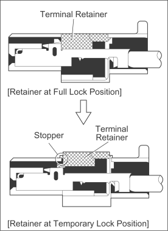
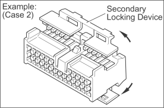
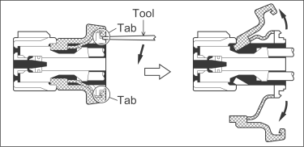
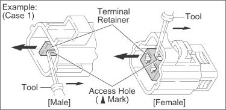
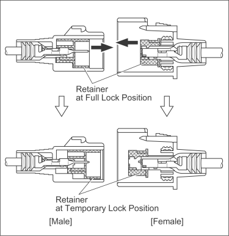
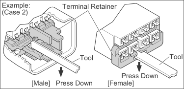
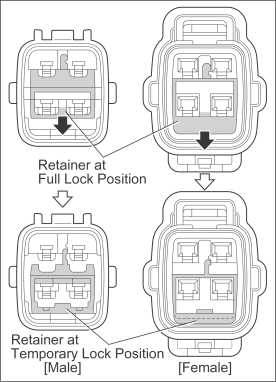
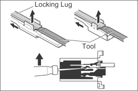

DISENGAGE THE SECONDARY LOCKING DEVICE OR TERMINAL RETAINER.
-
Locking device must be disengaged before the terminal locking clip can be released and the terminal removed from the connector.
-
Use a special tool or the terminal pick to unlock the secondary locking device or terminal retainer.
- NOTICE:
- Do not remove the terminal retainer from connector body.

[A] For Non-Waterproof Type Connector
- HINT:
- The needle insertion position varies according to the connector's shape (number of terminals etc.), so check the position before inserting it.
- "Case 1"
Raise the terminal retainer up to the temporary lock position.

- "Case 2"
Open the secondary locking device.


[B] For Waterproof Type Connector
- HINT:
- Terminal retainer color is different according to connector body.
- Example:
Terminal Retainer : Connector Body Black or White : Gray Black or White : Dark Gray Gray or White : Black

- "Case 1"
Type where terminal retainer is pulled up to the temporary lock position (Pull Type).
Insert the special tool into the terminal retainer access hole (
 Mark)
and pull the terminal retainer up to the temporary lock position.
Mark)
and pull the terminal retainer up to the temporary lock position.
- HINT:
- The needle insertion position varies according to the connector's shape (Number of terminals etc.), so check the position before inserting it.

- "Case 2"
Type which cannot be pulled as far as Power Lock insert the tool straight into the access hole of terminal retainer as shown.

Push the terminal retainer down to the temporary lock position.

-
Release the locking lug from terminal and pull the terminal out from rear.